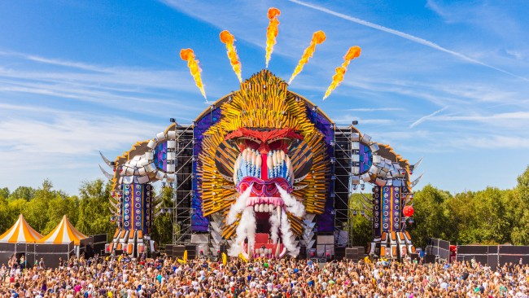
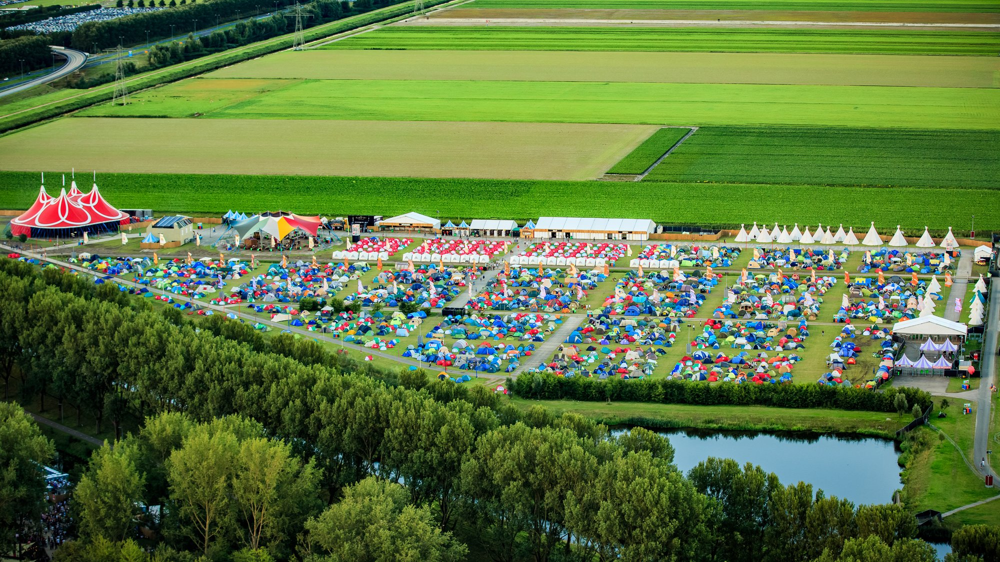
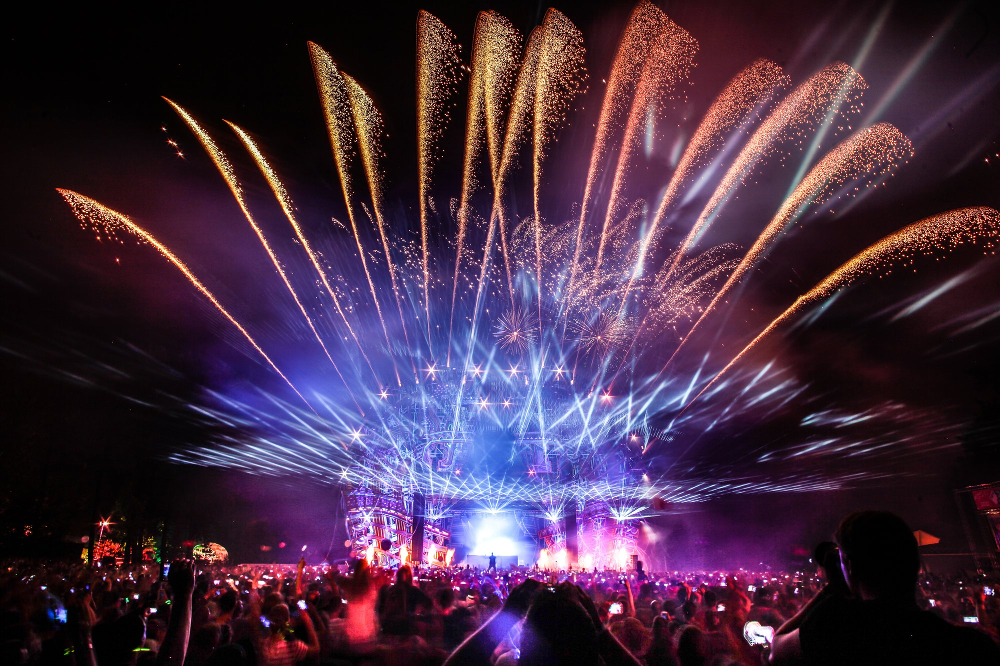
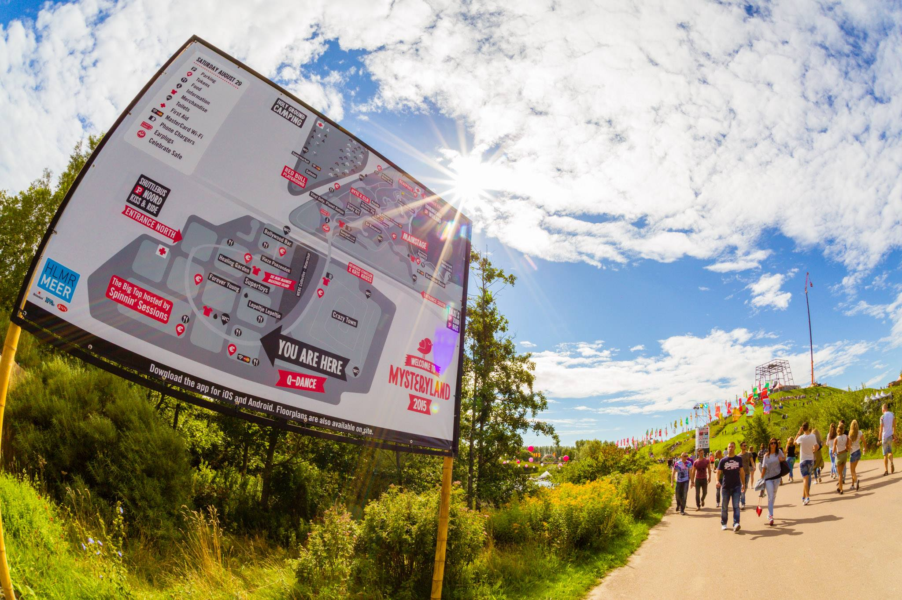
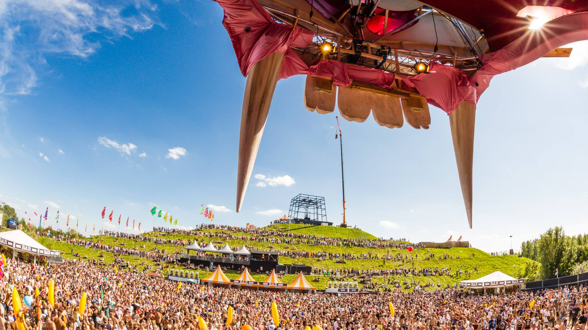
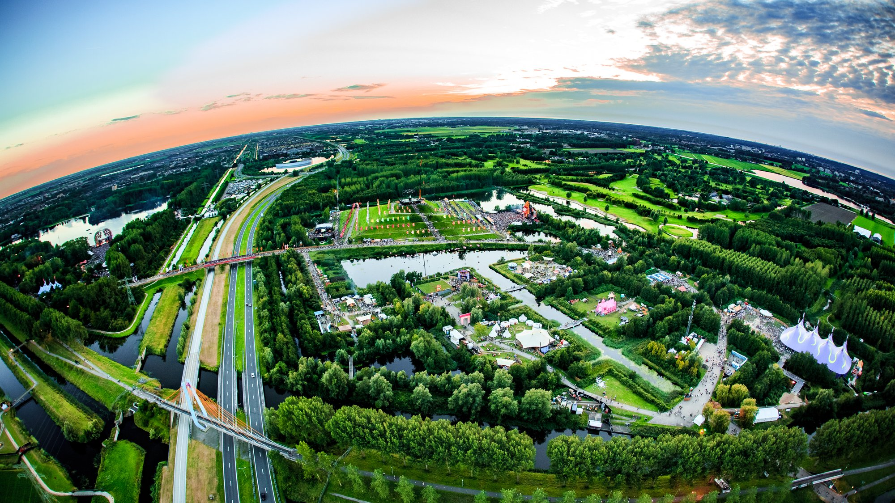

Mysteryland 2015: How Holland’s Oldest Dance Festival Does It Differently
{kind=link}

While there’s no shortage of audacious, spectacle-heavy summer festivals on offer, with event franchises like Tomorrowland, Ultra and EDC gradually spreading their tentacles across the continents, it’s easy to forget Mysteryland was one of the first.
The Amsterdam mainstay threw its 22nd annual party over the weekend, extending from its traditional one-day format into a camping weekender for the very first time. Given the level of detail that ID&T weaves into the rolling green plains of the Voormalig Floriade, you really do need the luxury of two days to explore it all.
With all the hype that’s built around the ostentatious stage designs and YouTube simulcasts of Ultra Miami and Belgium’s Tomorrowland in recent years, Mysteryland has certainly lost some lustre as an international festival favorite. That’s definitely a shame, as Mysteryland arguably offers the best experience out of them all for the more seasoned clubber seeking a sprawling, large-scale festival experience.
{kind=link}

The mainstage designs of Tomorrowland and Ultra have taken their cues from Hollywood summer blockbusters these past few years, employing so much spectacle it becomes almost numbing. In contrast to those behemoths, Mysteryland might seem even a little quaint.
The main stage featured the same design seen at its US edition this year – a pair of Trojan Horses locking eyes over the central booth. Instead of audacious spectacle, the main stage made its mark by deviating from the standard-issue lineups of its peers.
Saturday was the day that most closely resembled your regular EDM festival (albeit with a little less star of the power that’s purchased with Avicii, Guetta and the like). Dutch ‘future house’ favorite Oliver Heldens ushered in the headliners, followed by Laidback Luke, Nero and Nicky Romero, before a closing set from Alesso. In general, the DJs showed a little more restraint than expected, with less of the absurdity that’s begun to characterize mainstage EDM in 2015.
It was Sunday, though, where Mysteryland really mixed it up. The masked Claptone was an early wildcard at 1pm with house music on much more classic bent, followed by the reunited Deep Dish, who dropped 90 minutes of trance-y house and progressive. US prodigy Porter Robinson followed immediately after in live mode, with the more mellow selections from his Worlds album seamlessly seguing into anthems like “Language,” as well as UK drum n’ bass favourite Netsky, who also performed live with a cast of MCs and vocalists in tow.
Main stage scheduling has become so predictable in 2015 that it’s almost unthinkable to expect euphoric drum n’ bass alongside groovy house, but at Mysteryland it seamlessly transitioned into EDM headliners like Martin Garrix, who closed the weekend.
Meanwhile, the excess of the Q-dance stage was a weekend-long talking point. As divisive as hardstyle is, it’s remarkably popular in the Netherlands, accounting for as many as a third of the tickets sold to Mysteryland. The stage design this year was stunningly simple and effective; the face of a monkey that grew even more mesmerizing when lit up at night by red and blue lights, as smoke billowed out its nose and flames shot overhead. Whether you love or loathe hard dance, the synced lights and fireworks of the ‘Endshow’ are a marvel.
{kind=link}

While Tomorrowland is expected to deliver bigger and better mains stages each year, Mysteryland instead concentrates on the small touches; creating an otherworldly atmosphere across the natural beauty of the Voormalig Floriade. The north of the grounds is dominated by a man-made pyramid formation crafted by Dutch farmers, and you can climb to the top for an aerial view of the festival. It’s dotted with flags in circular formations that can be admired from a distance, and looking up towards the pyramid at dusk is a breathtaking sight.
To the left of the pyramid is a lake that’s peppered with floating colored spheres, which light up vividly after sunset. To reach the mainstage, you cross a smaller lake via a zig-zagging platform, which is set so low that it appears as if punters are walking on water. Mysteryland is full of serene moments like these, and it definitely makes for a contrast from the bombast of flame-throwers and CO2 cannons.
{kind=link}

The charm of Mysteryland is found in the colorful details, although the arts and culture element of the festival appeared a little lighter than in previous years. (The change might have something to do with the departure from ID&T of Duncan Stutterheim and Irfan van Ewijk, the co-founders who championed the more cerebral side of the festival over the years.)
However, there was still an impressive number of immersive art installations to be found deep into the forest. Across the Voormalig Floriade, walkways were lined with giant red hearts and a Healing Garden offered rest and recuperation, while costumed performers appeared at every turn.
{kind=link}

While the side stages of the major festivals often seem like an afterthought, at Mysteryland the crowd is spread evenly across the grounds, with each of the 15 or so stages proving to be consistently well attended.
Turning the corner of the pyramid that overlooks the Q-dance arena revealed a stage that blasted out party hip-hop for the whole weekend. And while the standard EDM can be heard at the mainstage in the south of the grounds, the HYTE tent catered for those who enjoy their tougher techno, with the likes of Chris Liebing, Planetary Assault Systems, Jeff Mills and Pan-Pot ensuring the party was moving non-stop during the festival.
Nearby, a stage constructed of several shipping containers boasted a ‘Vinyl Only’ selection of performers over the weekend, while arenas curated by Joris Voorn and Beatport catered for deeper dancefloor sounds. Elsewhere, the ubiquitous Spinnin’ Records and Steve Angello’s label Size Matters ensured all the crowd-pleasing boxes were ticked.
{kind=link}

A concrete bunker delivered rumbling bass music and broken beats, while a sprawling area was curated by Amsterdam’s famous LBGT Milkshake Festival, whose stage resembled an oversized pink children’s toy house. Hidden deep in the woods somewhere between the mainstage and the HYTE tent was a tiny yet impressive stage curated by the Kojade performance art collective, with a cast of elaborately costumed dancers and live percussionists complimenting its slinkier house sounds.
If you’ve ever complained of feeling ‘old’ at one of the larger dance festivals, Mysteryland is a welcome surprise. There’s a truly varied range of ages amongst the tens of thousands that attend, with newcomers partying alongside veterans who’ve been at nearly all of the parties in its 22-year history. Sometimes, the original is hard to beat.
Follow Angus Paterson on Twitter. Mysteryland 2016 is set for the weekend of August 26-27; find out more at the official festival website.